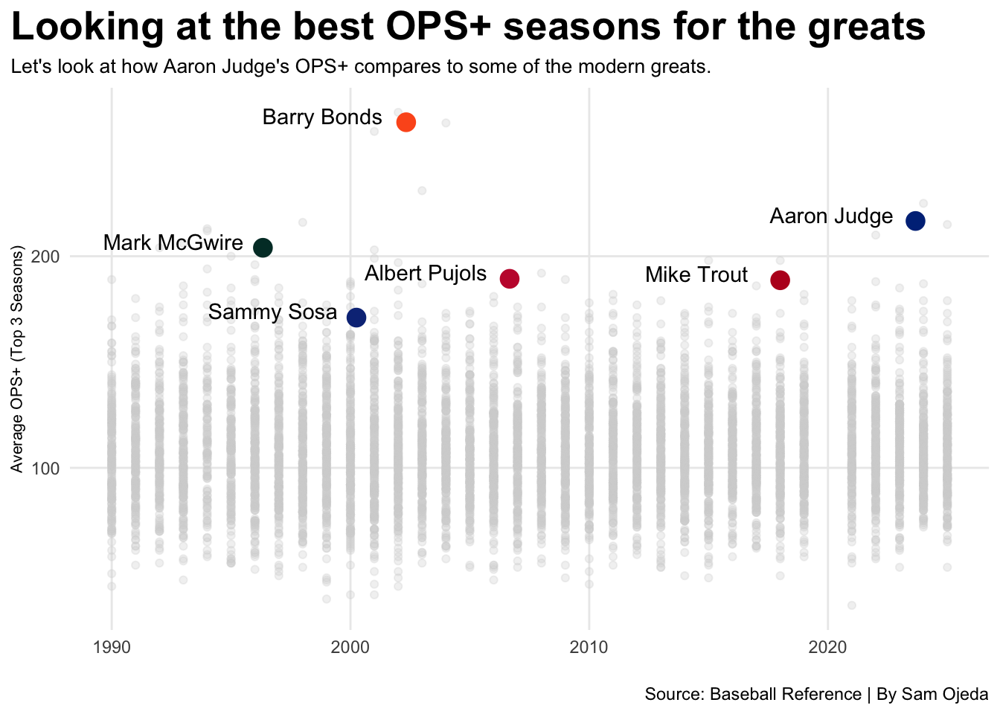
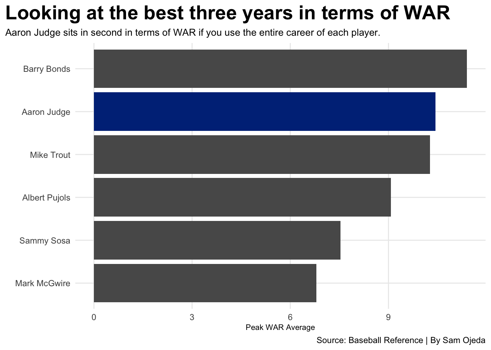
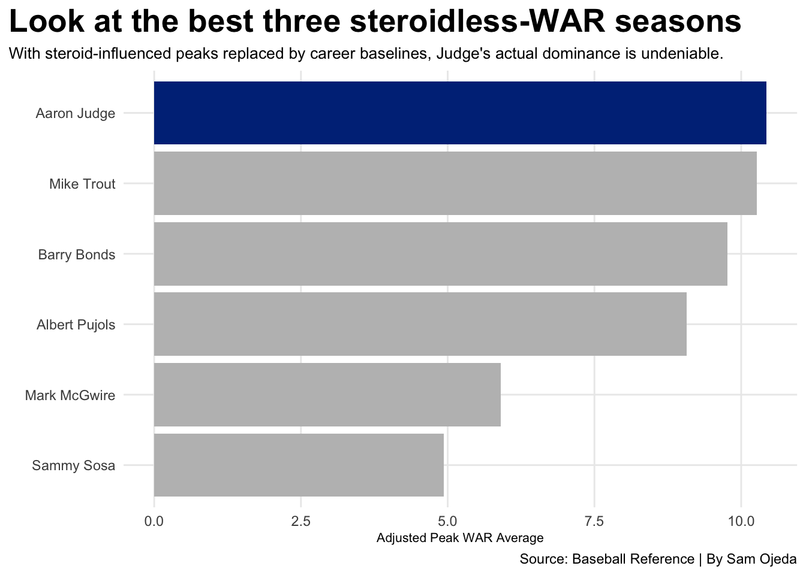
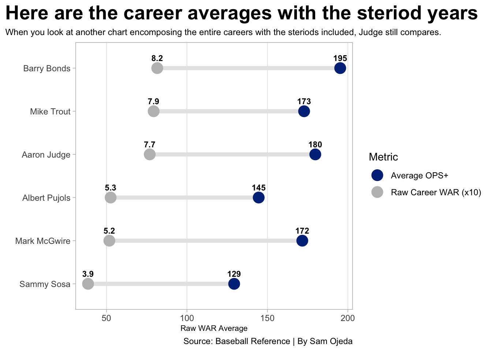
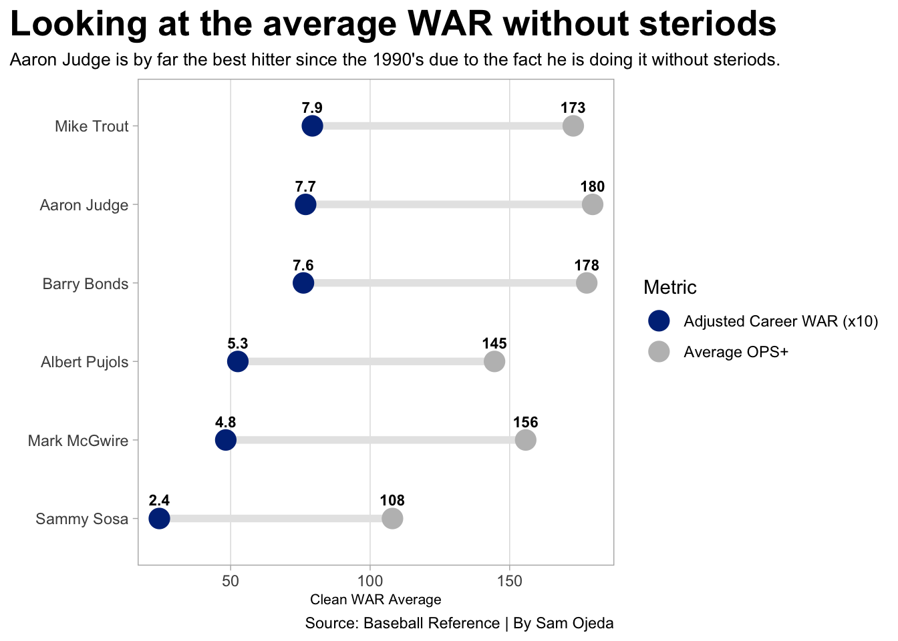

Is Aaron Judge the greatest hitter of the velocity era?
baseball
mlb
yankees
Author
Sam Ojeda
Published
April 10, 2026
Aaron Judge is having a career defined by power and offensive consistency. He has earned three Most Valuable Player Awards from Major League Baseball due to his ability to hit north of 50 home runs seemingly every season while also hitting for a high average. This type of hitter is rare. Since 1990, which is seen in my eyes as the beginning of the velocity era, only a handful of players have shown this kind of ability.
Anyone who is a less than casual baseball fan knows who Judge is. He has frequented advertisements on national TV, he has been on the cover of two video games and is one of the largest figures in the sports world both literally and figuratively. The 6-foot-8, 282-pound outfielder is a home run robbing, long ball hitting, and sweet swinging right-handed hitter who looks like he can be labeled as one of the best players of all time.
But is he actually the best?
To find out the answer to this commonly debated question, we turn to some data from Sports Reference. OPS+ is a statistic that paints a clear picture. It is an advanced statistic that looks at the hitters total offensive production, adjusts it for league-wide averages and factors in what ballpark certain hitters are playing. So yes, Yankee stadium being a “little league field” is factored in.
Is Aaron Judge the best hitter since 1990? Let’s begin by looking at Judge’s best three OPS+ seasons averaged against some post-1990 all-time greats.
Code
library(tidyverse)library(ggrepel)library(ggbeeswarm)stats <-read_csv("baseballhitters19142025 (1).csv")modern <- stats |>filter( Season >1989, PA >399)modern_greats <-c("Aaron Judge", "Barry Bonds", "Albert Pujols", "Mark McGwire", "Sammy Sosa", "Mike Trout")averages <- modern |>filter(Player %in% modern_greats) |>filter(!(Player =="Barry Bonds"& Season >=1999& Season <=2004),!(Player =="Mark McGwire"& Season >=1996& Season <=2001),!(Player =="Sammy Sosa"& Season >=1998& Season <=2003) ) |>group_by(Player) |>summarise(clean_avg_war =mean(WAR),clean_avg_ops =mean(`OPS+`) )judge <- modern |>filter(Player =="Aaron Judge") |>arrange(desc(`OPS+`)) |>top_n(3, wt=`OPS+`) |>summarize(Player ="Aaron Judge", Season =mean(Season), `OPS+`=mean(`OPS+`) )bonds <- modern |>filter(Player =="Barry Bonds") |>arrange(desc(`OPS+`)) |>top_n(3, wt=`OPS+`) |>summarize(Player ="Barry Bonds", Season =mean(Season), `OPS+`=mean(`OPS+`) )pujols <- modern |>filter(Player =="Albert Pujols") |>arrange(desc(`OPS+`)) |>top_n(3, wt=`OPS+`) |>summarize(Player ="Albert Pujols", Season =mean(Season), `OPS+`=mean(`OPS+`) )mcgwire <- modern |>filter(Player =="Mark McGwire") |>arrange(desc(`OPS+`)) |>top_n(3, wt=`OPS+`) |>summarize(Player ="Mark McGwire", Season =mean(Season), `OPS+`=mean(`OPS+`) )sosa <- modern |>filter(Player =="Sammy Sosa") |>arrange(desc(`OPS+`)) |>top_n(3, wt=`OPS+`) |>summarize(Player ="Sammy Sosa", Season =mean(Season), `OPS+`=mean(`OPS+`) )trout <- modern |>filter(Player =="Mike Trout") |>arrange(desc(`OPS+`)) |>top_n(3, wt=`OPS+`) |>summarize(Player ="Mike Trout", Season =mean(Season), `OPS+`=mean(`OPS+`) )ggplot() +geom_point(data = modern, aes(x = Season, y =`OPS+`), color ="lightgrey", alpha=.3) +geom_point(data = judge, aes(x = Season, y =`OPS+`), color ="#003087", size =4) +geom_point(data = bonds, aes(x = Season, y =`OPS+`), color ="#FD5A1E", size =4) +geom_point(data = pujols, aes(x = Season, y =`OPS+`), color ="#C41E3A", size =4) +geom_point(data = mcgwire, aes(x = Season, y =`OPS+`), color ="#003831", size =4) +geom_point(data = sosa, aes(x = Season, y =`OPS+`), color ="#0E3386", size =4) +geom_point(data = trout, aes(x = Season, y =`OPS+`), color ="#BA0021", size =4) +geom_text(data = judge, aes(x =`Season`-3.5, y =`OPS+`+3, label = Player)) +geom_text(data = bonds, aes(x = Season -3.5, y =`OPS+`+3, label = Player)) +geom_text(data = pujols, aes(x = Season -3.5, y =`OPS+`+3, label = Player)) +geom_text(data = mcgwire, aes(x = Season -3.75, y =`OPS+`+3, label = Player)) +geom_text(data = sosa, aes(x = Season -3.5, y =`OPS+`+3, label = Player)) +geom_text(data = trout, aes(x = Season -3.5, y =`OPS+`+3, label = Player)) +labs(x ="", y ="Average OPS+ (Top 3 Seasons)", title ="Looking at the best OPS+ seasons for the greats", subtitle ="Let's look at how Aaron Judge's OPS+ compares to some of the modern greats.", caption ="Source: Baseball Reference | By Sam Ojeda" ) +theme_minimal() +theme(plot.title =element_text(size =20, face ="bold"),axis.title =element_text(size =8), plot.subtitle =element_text(size=10), panel.grid.minor =element_blank(),plot.title.position ="plot" )

The thing that jumps out immediately is that Barry Bonds is head and shoulders above the rest of the players – a trend you’ll see throughout. However, the Yankee captain finds himself in second place. This proves that even playing 81 games a year in his smaller Yankees’ ballpark, he is still dominant on the average MLB field. It is surprising to see guys like Mike Trout, Sammy Sosa and Albert Pujols sit below the 200 line. Mark McGwire makes an interesting case but still sits plenty below The Captain.
While OPS+ is often looked at to define great hitters, WAR is the defining stat for a consistently dominant player. WAR, which stands for Wins Above Replacement, is an all-encompassing stat that estimates a player’s total contribution to their team compared to a replacement level player.
Code
judge_peak <- modern |>filter(Player =="Aaron Judge") |>top_n(3, wt=WAR) |>summarize(Player ="Aaron Judge", Peak_WAR =mean(WAR) )bonds_peak <- modern |>filter(Player =="Barry Bonds") |>top_n(3, wt=WAR) |>summarize(Player ="Barry Bonds", Peak_WAR =mean(WAR) )pujols_peak <- modern |>filter(Player =="Albert Pujols") |>top_n(3, wt=WAR) |>summarize(Player ="Albert Pujols", Peak_WAR =mean(WAR) )mcgwire_peak <- modern |>filter(Player =="Mark McGwire") |>top_n(3, wt=WAR) |>summarize(Player ="Mark McGwire", Peak_WAR =mean(WAR) )sosa_peak <- modern |>filter(Player =="Sammy Sosa") |>top_n(3, wt=WAR) |>summarize(Player ="Sammy Sosa", Peak_WAR =mean(WAR) )trout_peak <- modern |>filter(Player =="Mike Trout") |>top_n(3, wt=WAR) |>summarize(Player ="Mike Trout", Peak_WAR =mean(WAR) )judge_career <- modern |>filter(Player =="Aaron Judge") |>summarize(Player ="Aaron Judge", Career_WAR =sum(WAR) )bonds_career <- modern |>filter(Player =="Barry Bonds") |>summarize(Player ="Barry Bonds", Career_WAR =sum(WAR) )pujols_career <- modern |>filter(Player =="Albert Pujols") |>summarize(Player ="Albert Pujols", Career_WAR =sum(WAR) )mcgwire_career <- modern |>filter(Player =="Mark McGwire") |>summarize(Player ="Mark McGwire", Career_WAR =sum(WAR) )sosa_career <- modern |>filter(Player =="Sammy Sosa") |>summarize(Player ="Sammy Sosa", Career_WAR =sum(WAR) )trout_career <- modern |>filter(Player =="Mike Trout") |>summarize(Player ="Mike Trout", Career_WAR =sum(WAR) )peaks <-bind_rows(judge_peak, bonds_peak, pujols_peak, mcgwire_peak, sosa_peak, trout_peak)ggplot() +geom_bar(data = peaks, aes(x =reorder(Player, Peak_WAR), weight = Peak_WAR) ) +geom_bar(data = judge_peak, aes(x =reorder(Player, Peak_WAR), weight = Peak_WAR), fill ="#003087" ) +coord_flip() +labs(x ="",y ="Peak WAR Average",title ="Looking at the best three years in terms of WAR",subtitle ="Aaron Judge sits in second in terms of WAR if you use the entire career of each player.",caption ="Source: Baseball Reference | By Sam Ojeda" ) +theme_minimal() +theme(plot.title =element_text(size =20, face ="bold"),axis.title =element_text(size =8), plot.subtitle =element_text(size=10), panel.grid.minor =element_blank(),plot.title.position ="plot" )

When looking at the average WAR of each player’s best three seasons, you see that the order doesn’t change significantly. What does change is that Judge actually compares better to Bonds while Mark McGwire plummeted to the bottom and out of the conversation.
However, these numbers come with a ginormous, colossal and undeniable asterisk next to them. The era that produced historic seasons from Bonds, McGwire and Sosa are not defined by greatness, but by steroids. To find the true value of Aaron Judge, who as far as we know has played clean his whole career, let’s see what happens when he is against a level playing field.
Code
adjusted_peaks <- modern |>filter(Player %in% modern_greats) |>left_join(averages, by ="Player") |>mutate(adj_WAR =case_when( Player =="Barry Bonds"& Season >=1999& Season <=2004~ clean_avg_war, Player =="Mark McGwire"& Season >=1996& Season <=2001~ clean_avg_war, Player =="Sammy Sosa"& Season >=1998& Season <=2003~ clean_avg_war,TRUE~ WAR )) |>group_by(Player) |>top_n(3, wt = adj_WAR) |>summarise(Peak_WAR_Adj =mean(adj_WAR) )judge_adj_peak <- adjusted_peaks |>filter(Player =="Aaron Judge")ggplot() +geom_bar(data = adjusted_peaks, aes(x =reorder(Player, Peak_WAR_Adj), weight = Peak_WAR_Adj),fill ="grey" ) +geom_bar(data = judge_adj_peak, aes(x =reorder(Player, Peak_WAR_Adj), weight = Peak_WAR_Adj), fill ="#003087" ) +coord_flip() +labs(x ="",y ="Adjusted Peak WAR Average",title ="Look at the best three steroidless-WAR seasons",subtitle ="With steroid-influenced peaks replaced by career baselines, Judge's actual dominance is undeniable.",caption ="Source: Baseball Reference | By Sam Ojeda" ) +theme_minimal() +theme(plot.title =element_text(size =20, face ="bold"),axis.title =element_text(size =8), plot.subtitle =element_text(size =10), panel.grid.minor =element_blank(),plot.title.position ="plot" )

By replacing the peak steroid years of those legends with their career averages, we even the playing field. By neutralizing the inflation of the stats in the late 90s and earlier 2000s, we see a stark change in the hierarchy.
Judge appears as the gold standard of the modern game. While the legends of the past saw numbers fall once reality hit, Judge and Trout stayed steady. Finally, we combine the two. How do OPS+ and WAR combine to show who really is the best.
Code
unfiltered_data <- modern |>filter(Player %in% modern_greats) |>group_by(Player) |>summarise(raw_avg_war =mean(WAR),raw_avg_ops =mean(`OPS+`) )ggplot() +geom_segment(data = unfiltered_data, aes(y =reorder(Player, raw_avg_war), yend = Player, x = raw_avg_war *10, xend = raw_avg_ops), color ="#e6e6e6", linewidth =2 ) +geom_point(data = unfiltered_data, aes(y = Player, x = raw_avg_ops, color ="Average OPS+"), size =5 ) +geom_point(data = unfiltered_data, aes(y = Player, x = raw_avg_war *10, color ="Raw Career WAR (x10)"), size =5 ) +geom_text(data = unfiltered_data,aes(y = Player, x = raw_avg_ops, label =round(raw_avg_ops, 0)),vjust =-1.2, size =3, fontface ="bold" ) +geom_text(data = unfiltered_data,aes(y = Player, x = raw_avg_war *10, label =round(raw_avg_war, 1)),vjust =-1.2, size =3, fontface ="bold" ) +scale_color_manual(name ="Metric", values =c("#003087", "grey")) +labs(x ="Raw WAR Average",y ="",title ="Here are the career averages with the steriod years",subtitle ="When you look at another chart encomposing the entire careers with the steriods included, Judge still compares.",caption ="Source: Baseball Reference | By Sam Ojeda" ) +theme_light() +theme(plot.title =element_text(size =20, face ="bold"),axis.title =element_text(size =8), plot.subtitle =element_text(size =9), panel.grid.major.y =element_blank(),panel.grid.minor =element_blank(),plot.title.position ="plot" )

Code
adjusted_data <- modern |>filter(Player %in% modern_greats) |>left_join(averages, by ="Player") |>mutate(adj_WAR =case_when( (Player =="Barry Bonds"& Season >=1999& Season <=2004) | (Player =="Mark McGwire"& Season >=1996& Season <=2001) | (Player =="Sammy Sosa"& Season >=1998& Season <=2003) ~ clean_avg_war,TRUE~ WAR ),adj_OPS =case_when( (Player =="Barry Bonds"& Season >=1999& Season <=2004) | (Player =="Mark McGwire"& Season >=1996& Season <=2001) | (Player =="Sammy Sosa"& Season >=1998& Season <=2003) ~ clean_avg_ops,TRUE~`OPS+` ) ) |>group_by(Player) |>summarise(final_avg_war =mean(adj_WAR),final_avg_ops =mean(adj_OPS) )ggplot() +geom_segment(data = adjusted_data, aes(y =reorder(Player, final_avg_war), yend = Player, x = final_avg_war *10, xend = final_avg_ops), color ="#e6e6e6", linewidth =2 ) +geom_point(data = adjusted_data, aes(y = Player, x = final_avg_ops, color ="Average OPS+"), size =5 ) +geom_point(data = adjusted_data, aes(y = Player, x = final_avg_war *10, color ="Adjusted Career WAR (x10)"), size =5 ) +geom_text(data = adjusted_data,aes(y = Player, x = final_avg_ops, label =round(final_avg_ops, 0)),vjust =-1.2, size =3, fontface ="bold" ) +geom_text(data = adjusted_data,aes(y = Player, x = final_avg_war *10, label =round(final_avg_war, 1)),vjust =-1.2, size =3, fontface ="bold" ) +scale_color_manual(name ="Metric", values =c("#003087", "grey")) +labs(x ="Clean WAR Average",y ="",title ="Looking at the average WAR without steriods",subtitle ="Aaron Judge is by far the best hitter since the 1990's due to the fact he is doing it without steriods.",caption ="Source: Baseball Reference | By Sam Ojeda" ) +theme_light() +theme(plot.title =element_text(size =20, face ="bold"),axis.title =element_text(size =8), plot.subtitle =element_text(size =10), panel.grid.major.y =element_blank(),panel.grid.minor =element_blank(),plot.title.position ="plot" )

When we see the adjusted WARs and OPS+s next to each other we see Judge at the top once again. While Bonds still put up a career worthy of the Hall of Fame, the data is clear – Judge and Trout have been a shining light following a world of darkness.
Judge is doing this in an era of 100 mph fastballs and elite specialization up-and-down pitching rotations. When you strip away an era defined by cheating, Judge is not just one of the greats, he is the greatest we have ever seen.